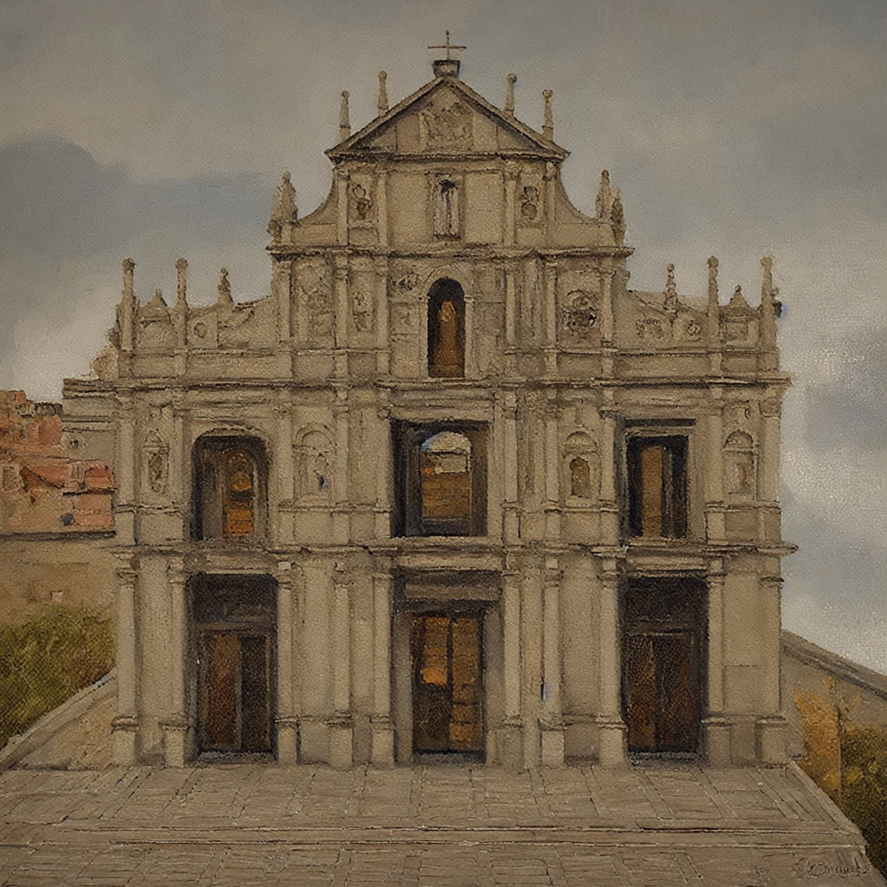

Architectural Image Style Transfer
Overview: A graduation project focused on transforming standard architectural images into artistic styles (e.g., oil painting, embroidery).
Technologies: AI Model Fine-tuning, LoRA, Computer Vision, Deep Learning.
